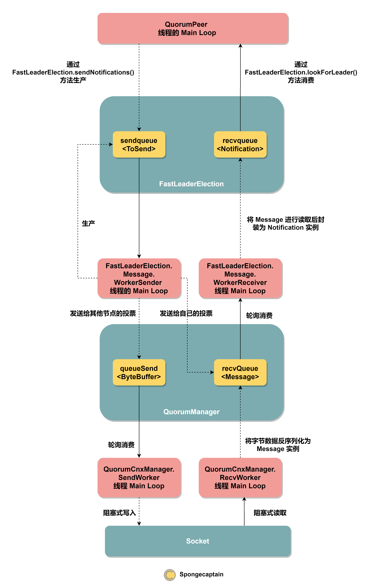
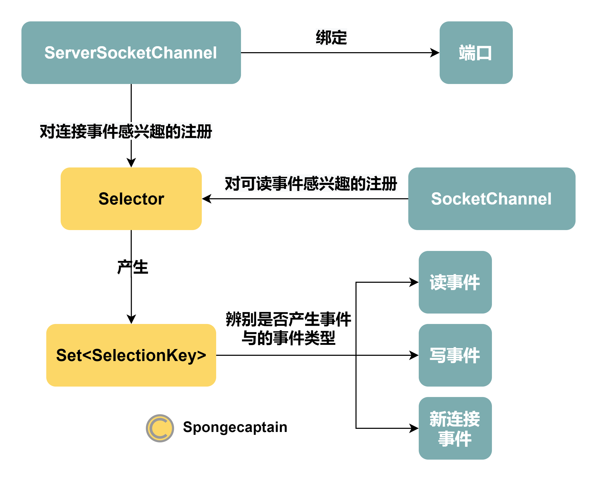
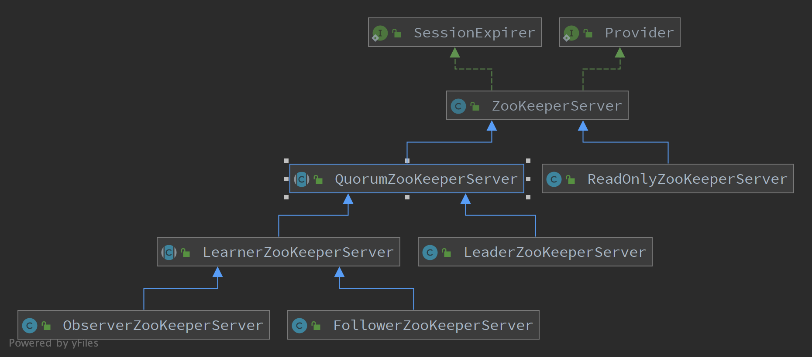
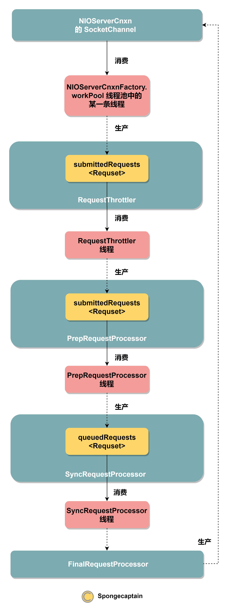

ZooKeeper 服务端线程分析
文章目录
我对 ZooKeeper release-3.6.1 的源码分析地址为：https://github.com/Spongecaptain/zookeeper
Enjoy the Source Code.
:)
1. 为什么从线程分析入手？
我一直在寻找一种阅读框架源码的好方式，通常我会选择找到启动类的 public static void main(String[] args) 方法入手，然后按照启动时间线进行分析。这种方式最大的问题就在于随着组件的增多，启动流程的分析复杂度会指数上升，因为加一个组件不仅仅会线性地影响启动步骤，还由于组件之间的依赖关系进一步加重了这种复杂度。
但是基于 NIO 的 Java 框架，无论其是原生的 JDK NIO 还是经过封装的 Netty，其都逃离不出一个框架：
异步编程（或者说异步网络编程） = 队列 + 轮询线程
注意：线程作为一个实例，还可以选择将队列实例作为其维护的字段，因此很多时候可能仅仅看到一个对外暴露的线程实例。
出于这个原因：
- 我们分析线程，那么很容易知道各个组件究竟负责任务是什么，具体在执行什么；
- 我们分析队列，那么很容易知道各个组件之间如果进行消息的传递、线程间通信与合作；
因此，我除了按照传统方式（即从启动类的 public static void main(String[] args)）方法入手进行按照时间先后顺序上的分析，还对不同并行着着的线程的分析。
线程的分析逻辑是比较简单的，从其 start() 方法入手分析，然后再分析其 run() 方法，不过需要特别注意 main 线程没有 start() 与 run() 方法，其运行逻辑封装于 main() 方法中。
如果你对 ZooKeeper 在传统方式上的分析，可以参考我对 ZooKeeper 3.6.0 的代码分析（按照启动流程中涉及的方法与类添加了相当的注释），地址如下：https://github.com/Spongecaptain/zookeeper
2. main 线程
JVM 规定程序入口为类的 public static void main() 方法，在运行该方法时会启动 main 线程。对于 ZooKeeper 服务端而言有两个启动类，它们都有 main() 方法，分别是：
- QuorumPeerMain
- ZooKeeperServerMain
QuorumPeerMain 类为集群模式下的 main 方法入口，ZooKeeperServerMain 为单机模式下的 main 方法入口，前者兼容后者。这两者的启动逻辑类似，我们以集群下的 QuorumPeerMain 类对应的 main 线程为例。
具体的代码不分析，这里主要按照时间线分析一下这些 main 方法的启动逻辑：
- 配置类实例的构造与实例的初始化（配置类实例通过硬盘上的配置文件进行初始化）；
- 根据配置依次配置其他线程组件，然后启动；
- 调用
Thread.join()方法阻塞当前 main 线程； - 一旦阻塞结束，说明其他线程已经退出，那么 main 线程在运行结束前在
finally{}语句块中执行资源释放等任务；
3. DatadirCleanupManager 定时清理任务线程
DatadirCleanupManager 类实际上基于 JDK 提供的定时任务类 Timer 实现的。
DatadirCleanupManager 类在 ZooKeeper 服务端启动过程中负责清理工作，由其负责清理的文件有：
- snapshot 快照；
- transaction logs 事务日志；
这种清理工作几乎在所有的服务端应用上都是可以见到的，例如 MySQL 的日志系统中的 chekpoint 机制，在 chekpoint 之前的日志均可以删除。而 ZooKeeper 需要进行清理工作的原因是类似的：
- ZooKeepr 的预写日志：ZooKeeper 的任何一个写操作都产生事务，事务日志需要持久化到硬盘；
- 内存快照：当 ZooKeeper 接收到的写操作指令达到一定数量或者达到一定的运行时间，就需要对 ZooKeeper 内存复制（快照）一份到磁盘（持久化）；
DatadirCleanupManager 类的清理逻辑主要写于其 start() 方法中，如下所示：
|
|
由上述代码块可知，ZooKeepr 的清理任务是由 Timer、TImerTask 类来实现的，它们提供了一个良好的定时任务逻辑。
关于 Task 与 TimeTask 类，我们可以这么理解：
- Timer 的本质是一个线程，用于定时的执行任务；
- TimerTask 的本质是一个 Runable 实现类，提供给 Timer 来执行；
定时逻辑的实现于 Timer.mainLoop() ，其实现逻辑是：
- Timer 内部有一个任务队列实例 TaskQueue，用于将待执行任务按照截止时间先后关系从小到大排列；
- Timer 内部有一个异步线程（线程的异步是相对于启动 Timer 工作的线程而言的），负责消费任务队列中的元素，方式是执行其
run()方法。 - 异步线程的本质工作就是轮询任务队列：
- 队列为空时，当前线程阻塞，直到队列不为空；
- 队列不为空时，查看任务队列中截止时间最近的 TimerTask 实例（即第一个元素），读取其截至时间戳 nextExecutionTime 是否已经大于系统当前时间戳 currentTime。如果是，那么执行，否则，线程阻塞
executionTime - currentTime大小的时间；
这种基于轮询最紧急任务时间戳的定时逻辑在 Java 中是常见的定时任务实现逻辑，Netty 中的定时逻辑也类似于此。
4. QuorumPeer 线程
我们通常将 QuorumPeerMain 以及 ZooKeeperServerMain 看作 ZooKeeper 服务端的启动入口类，将 QuorumPeer 视作 ZooKeeper 主机实例。
因为 QuorumPeer 线程的 start() 方法代码比较短，因此我就将其贴在下方：
|
|
可见，QuorumPeer 线程的运行逻辑如下：
- 将内存的快照 snapshot 文件以及 transaction log 反序列化到内存中；
- 启动监听客户端连接的工程类，其内有线程；
- 初始化 Leader 选举依赖的传输层实例 QuorumCnxManager 类实例以及应用层实例 FasatLeaderElection 类实例，并让他们建立依赖关系；
- 启动监听 JVM 性能的线程；
- 通过
super.start()方法来在 QuorumPeer 线程中运行run()方法；
实际上，这里
start()方法依然在 main 线程中执行，只不过为了进行区分不同组件之间的功能，将start()方法视作 QuorumPeer 线程的执行任务。如果真的要条分缕析，那么只有 QuorumPeer 的run()才真正由 QuorumPeer 线程来负责处理。
下面则是要分析 QuorumPeer 的 run() 方法，执行逻辑如下：
-
通过配置来初始化 QuorumPeer 实例的线程名，例如
QuorumPeer[myid=%d](plain=%s)(secure=%s)，正是因为这个名字，我们才将 QuorumPeer 实例与 ZooKeeper 服务端等价； -
进行 QuorumPeer 线程的注册逻辑；
-
进入 MainLoop 循环（ZooKeeper 服务端的主循环）：轮询当前 ZooKeeper 服务端的状态，当节点状态为 LOOKING 时则同步地（还是在 QuorumPeer 线程中）进行节点选举操作，包括生成选票以及投票；
如果为节点出于其他状态也有对应的逻辑，这里不多写了。
-
在生成选票之后，会将选票封装为 ToSend 实例加入到 FastLeaderElection 实例内的 sendqueue 队列中；
可见，QuorumPeer 线程在其 Main Loop 中会生成选票，但是 QuorumPeer 线程本身并不负责选票的网络传输，这是一个异步过程。网络传输由 FastLeaderElection 实例内部的线程来完成。如果从阻塞队列角度来看，QuorumPeer 线程为 FastLeaderElection .sendqueue 队列的生产者，而 FastLeaderElection 实例内部的一条线程作为此队列的消费者。下一小节会详细进行说明。
5. FastLeaderElection 实例内部的两条线程
FastLeaderElection 类为一个应用层选举算法类，其依赖于传输层的 QuorumCnxManager。
FastLeaderElection 类与之前提到的类的最大区别在于其本身不是一个 Thread 的子类，但是其内部维护了两个线程，具体的逻辑如下：
-
FastLeaderElection 实例内部维护了一个 FastLeaderElection.Messager 实例；
-
Messager 内部有两个线程，类型分别为：
FastLeaderElection.Messager.WorkerReceiver以及FastLeaderElection.Messager.WorkerSender； -
FastLeaderElection 实例内部维护了两个队列：
1 2LinkedBlockingQueue<ToSend> sendqueue;//存储发送给其余节点的消息（ToSend 实例）的队列 LinkedBlockingQueue<Notification> recvqueue;//存储接收其余节点发送来通知（Notification 实例）的队列
下面我们依次分析上述两条线程的运行逻辑。
1.WorkerSender 线程
WorkerSender 线程的主要逻辑是在其 run() 方法中不断轮询 FastLeaderElection.sendqueue 队列，在队列不为空时消费队列中的元素。当从队列中取走一个 ToSend 实例后，并不能马上进行发送，而是需要首先将 ToSend 序列化并封装为 ByteBuffer 实例， 接着将此实例加入 QuorumCnxManager 实例内的 BlockingQueue<ByteBuffer> 队列中。如果此时节点之间没有建立用于选举的 Socket 连接，那么这里就会通知 QuorumCnxManager 实例来进行异步的连接操作。
可见 WorkderSender 线程本身也不直接负责网络数据的发送，具体的 NIO 消息发送由 QuorumCnxManager 实例内的线程来完成，具体逻辑会在下一小节中进行说明。
结合第四小节，我们可以得出结论：FastLeaderElection.sendqueue 队列的生产者消费者分别为：
- 生产者：QuorumPeer 线程，通过调用
FastLeaderElection.sendNotifacations()方法来实现； - 消费者：FastLeaderElection.Messager.WorkerReceiver 线程；
注意：这里只是用于说明主要的生产者与消费者，严谨地来说，FastLeaderElection.Messager.WorkerReceiver 线程同时也是生产者线程，其在一定条件下也会向 FastLeaderElection.sendqueue 队列添加元素。
从阻塞队列中取出元素的方式是
poll()方法，向阻塞队列加入元素的方式是offer()方法。
2.WorkerReceiver 线程
WorkerReceiver 线程的主要逻辑是在其 run() 方法中不断地轮询 QuorumCnxManager 实例内的BlockingQueue<Message> recvQueue 队列，当存在 Message 元素，那么将其取出。然后对 Message 进行合法性判断，例如要大于规定的字节长度、任期版本号要大于本节点的当前任期版本号，如果一切符合要求，那么根据消息的具体语义来进行其他逻辑处理，例如重新开始选举。如果当前服务器节点就在 LOOKING 状态，那么就将 Message 元素封装为 Notification 实例后加入 FastLeaderElection.recvqueue 队列中。还包括直接发送数据的逻辑，有待补充。
总结一下，WorkerReceiver 线程的主要逻辑为消费 BlockingQueue<Message> recvQueue 队列中来自参与竞选的其他节点的竞选消息，在解析完消息后进行，根据消息进行进一步的选举逻辑操作，最后将消息封装为 Notification 实例添加到 FastLeaderElection.recvqueue 队列中。
那么，FastLeaderElection.recvqueue 队列的生产者显然是 WorkerReceiver 线程，而消费者是那一条线程呢？
消费者线程是 QuorumPeer 线程，其通过调用 FastLeaderElection.lookForLeader() 方法来开始选举，在选举时需要其他节点的选票，此时就需要从 FastLeaderElection.recvqueue 队列中取出元素进行投票情况的分析。
因此，FastLeaderElection.recvqueue 队列的生产者与消费者为：
- 生产者：WorkerReceiver 线程，从 QuorumCnxManager 实例的内部队列中取出 Message 元素，然后封装为投票通知加入到该队列中；
- 消费者：QuorumPeer 线程，在通过
FastLeaderElection.lookForLeader()方法开始选举时需要知道其他节点的投票，因此需要从队列中取元素；
6. QuorumCnxManager 实例内部的多条线程
前面我们已经提到了，FastLeaderElection 实例内部的两条线程实际上依赖于 QuorumCnxManager 实例内的多条线程来完成工作，这里的工作指的时网络层通信。FastLeaderElection 主要实现了异步的选举投票，但是本身并不负责真正地将选票通过网络传输出去，以及接收其他节点的选票。FastLeaderElection 实例是工作在应用层的算法协议，而 QuorumCnxManager 实例则工作在传输层。
QuorumCnxManager 实例在其内部维护了多条线程以及多个队列，我们假设 ZooKeeper 集群内有 n 个节点参与 Leader Election 过程，那么有：
- n-1 条异步线程 SendWorker，每一个异步线程对应一个阻塞队列 (queueSendMap 的 value)，每一个线程负责消费阻塞队列上的消息
- n-1 条异步线程 RecvWorker，所有异步异步线程仅仅对应一个阻塞队列 recvQueue，一起负责向此队列添加元素
- n-1 个阻塞队列(
ConcurrentHashMap<Long, BlockingQueue<ByteBuffer>> queueSendMap的 value)，用于存储待发送的消息（每一个异步线程一个） - n-1 个 ByteBuffer 用于存储发给其余参与竞选节点的最后一个消息(存储于 lastMessageSent 字段中)
- 1 个阻塞队列
BlockingQueue<Message> recvQueue，用于存储当前主机接收到的消息（这与发送相比截然不同，不管集群中哪一个节点发来的消息
可见 QuorumCnxManager 实例内部的线程模型是比较复杂的，下面依次进行解释。
异步线程与队列模型是是什么?
- 本机与其他所有参与竞选的的所有节点都建立了 JDK Socket 连接，因此线程数为 n-1。注意连接并不基于 JDK NIO 下的 ChannelSocket 实现；
- 本机为每一个 Socket 连接都分配了一对线程：SenderWorker 以及 RecvWorker 线程，这一点类似于 Tomcat 中的
Per Thread, Per Request模型，只不过这里的 Socket 属于长连接，Tomcat 下的 Socket 连接通常是短连接； - 对于每一个 Socket，RecvWorker 线程负责阻塞地读取 Socket 上的请求数据，然后将字节数据反序列化为 Message 实例，最终将其添加到 recvQueue 队列中；SendWorker 线程，其负责将消费 QuorumCnxManager.queueSend 上的 ToSend 实例，并序列化，最终阻塞地向 Socket 写入字节数。
需要强调的是，因为本节点会与参与竞选的其他节点建立 n-1 个 Socket 连接，每一个连接都有一个单独的 QuorumCnxManager.queueSend 队列，用于存储本节点要向其发送的消息。这是因为本节点存在需要给不同节点发送不同消息的情况。但是无论连接数有多少，仅仅存在一个 QuorumCnxManager.recvQueue 队列，这是因为无论是其他哪一个节点向本节点发送数据，走的都是同一套处理流程，因此使用一个队列就足够了。
这里的消费者与生产者模型是什么？
- QuorumCnxManager.ququeSend(每一个连接拥有一个)：
- 生产者：FastLeaderElection.Message.WorkerSender 线程负责从 FastLeaderElection.sendQueue 队列上消费元素，然后序列化为 ByteBuffer 后写于 QuorumCnxManager.SendWorker；
- 消费者：FastLeaderElection.Message.WorkerReceiver 线程负责从 QuorumCnxManager.RecvQueue 上消费 Message 元素，然后经过封装与读取后写入于 FastLeaderElection.recvqueue 中；
7. ZooKeeper 用于 LeaderElection 的线程通信模型总结
线程间通信与协作模型可以归纳为队列+线程，而从队列角度来看，线程又分为两种类型：生产者线程、消费者线程。
- 生产者线程负责向队列中添加元素，如果没有新的元素加入队列，线程也没有运行的必要（新元素是驱动力）；
- 消费者线程负责从队列中取走元素，如果没有线程来负责取元素，那么队列最终会因为装满而放不下新元素；
不管怎么样，我将 ZooKeeper 服务端用于竞选的线程模型总结如下图所示：

注意事项：上图仅仅画出了一个 Socket 连接的线程模型，但实际上本机需要与其他所有参与竞选的节点都建立 Socket 连接。如果要考虑全部用于竞选的 Socket，那么需要在图中增加相应的 QuorumCnxManager.SendWorker 以及 QuorumCnxManager.RecvWorker 线程、QuorumCnxManager.queueSend<Bytebuffer> 实例。
图示：
- 虚线箭头：作为生产者向箭头所指队列添加元素；
- 实线箭头：作为生产者从箭尾所连的队列中取出元素；
- 粉底框：线程实例；
- 黄底框：队列实例；
- 绿底框：一般实例；
这张图的确有点长，不过 ZooKeeper 服务端用于 LeaderElection 的线程的确比较繁多，可以根据我带有中文注释的个人仓库进行分析。
特别需要注意：你可以看到在 Socket 阻塞写入上面的队列为元素类型为 ByteBuffer 的阻塞队列，其虽然使用着 JDK NIO 中的 ByteBuffer 实例、使用阻塞队列、异步线程等机制，但是最终在网络层上却使用着阻塞 I/O，即 Socket I/O，而不是 NIO，即 SocketChannel 实例。
补充：ZooKeeper 中还存在启动一个异步线程用于检测连接是否依然存活的机制，不过由于这种线程生命周期会很快结束，因此这里就不讨论了。
8. ServerCnxnFactory 内的线程与线程池
在第 7 节中详细描述了 ZooKeeper 服务端用于 LeaderElection 的线程模型（包括队列模型），那么下一步就是搞明白 ZooKeeper 服务端是如何与客户端建立连接的。不过服务端与客户端之间的网络通信模型更加复杂，例如在服务端处涉及：请求的接收与处理、响应的封装于发送，ACL 机制、临时节点机制。我们这里的重点仅仅是请求的接收与处理（包括响应回复）线程，但是并不会在这里讲其余机制。
LeaderElection 是 ZooKeeper 集群内部节点与节点之间的通信模型，而 ZooKeeper 集群中的每一个节点都要为客户端提供访问数据的能力。
ServerCnxnFactory 类本身不是线程，而是用于生产 ServerCnxn 实例的工厂类，ServerCnxn 实例代表一对 TCP 连接。不同于 LeaderElection 在基于同步阻塞的 Socket 网络通信模型，ServerCnxnFactory 的子类都基于 NIO 实现，要么是 JDK 原生 NIO，要么是封装了 JDK NIO 的 Netty NIO，不管怎么样，其重要的特点便是异步通信模型。
我们这里基于原生 JDK NIO 的 NIOServerCnxnFactory 来进行讲解，实际上 ZooKeeper 官方给的注释也足够明白了，不过这里讲得更细节一点。
NIOServerCnxnFactory 类作为一个工厂类内部管理了多个线程以及一个线程池，在 CPU 核心数为 n 的情况下有：
max{√(n/2) , 1}条 SelectorThread 线程，这些线程都封装于 NIOServerCnxnFactory 类实例中，由后者直接管理，被 AeecptThread 使用；- 2*n 条 WorkerThread 线程，这些线程封装于 NIOServerCnxnFactory 工厂类实例管理的线程池中，；
- 一条 NIOServerCnxnFactory.AccpetThread 线程实例；
- 一条 NIOServerCnxnFactory.ConnectionExpirerThread 线程实例；
源码比较长，这里不贴了，但是你可以通过阅读 ServerCnxnFactory 的 configure() 以及 start() 方法来得到上述说法的验证。
与 CPU 核心数相关的线程以及线程池的规模由 ServerCnxnfactory 类的 configure() 方法（多个重载方法）来决定，具体可以从这个方法入手来看规模是如何决定的，在 Java 中得到 CPU 核心数仅仅需要调用如下方法：
|
|
事实上，线程的规模取决于 CPU 核心数不仅仅 ZooKeeper 一家，Netty 的线程规模有着类似的处理逻辑。
那么，ServerCnxnFactory 内部的线程以及线程池的运行逻辑是什么呢？
首先我们需要理解 JDK NIO 的大致模型，如下图所示：

1.AcceptThread 线程
AcceptThread 负责将注册在 Selector 上的 ServerSocketChannel 实例的产生的新连接事件处理。具体来说，其有如下的特点：
- 通过
Selector.select()方法来查询是否有事件发生，在没有事件发生时阻塞，否则进行事件处理； - 非阻塞下判断 Selector 实例内部产生的事件类型，其仅仅处理新连接事件，对应
SelectionKey.isAcceptable()方法返回 true； - 判断当前 ZooKeeper 服务端是否达到配置中规定的最大客户端连接数，如果有达到，那么拒绝新连接，否则接收新的客户端连接（在 ZooKeeper 3.6.0 版本中默认配置为 60 个）；
- 将新连接对应的 SocketChannel 实例配置为非阻塞模式；
- 从注册的 SelectorThread 中取出一个线程，通过
selectorThread.addAcceptedConnection(sc)方法来使当前线程负责新连接（SocketChannel 的通信），这里使用了一个特殊的机制，稍后会具体讲到。实际上，上述方法的内部执行逻辑是将 SocketChannel 加入到被选择的 SelectorThread 实例的 accpetedQueue 队列中，等待 SelectorThread 来消费(负责其 I/O 逻辑)，具体如何处理队列中的元素在 SelectorThread 中会提到。
AcceptThread 线程能够均匀地将 SocketChannel 实例分配队列中的 SelectorThread 线程，原理如下伪代码所示：
|
|
注意事项：
- 每一个 SelectorThread 实例维护着一个 SocketChannel 队列，它们之间并不对此进行共享；
- 通常我们自己写的代码中会马上将新连接对应的 SocketChannel 实例注册到 Selector 实例中，但是直到这里我们还没有对 SocketChannel 实例进行注册。这一部分工作由 SelectorThread 来完成；
2.SelectorThread 线程
SelectorThread 线程一共有 max{√(n/2) , 1} 条，其会接收来自 AccpetThread 线程给予的 SocektChannel 实例，然后负责其 NIO 通信。其在没有事件产生时，阻塞于 Selector.select() 方法，当有事件发生时，判断事件类型，如果可读可写事件，那么就进行 I/O 事件的处理。每一条 SelectorThread 的 Main Loop 执行逻辑分为三个部分，如下：
1.第一部分工作是对 Selector 事件的处理，其处理逻辑如下：
- 通过
Selector.select()方法来查询是否有事件发生，在没有事件发生时阻塞，否则进行事件处理； - 非阻塞下判断 Selector 实例内部产生的事件类型，其仅仅处理可读、可写事件，对应
SelectionKey.isWritable()或者SelectionKey.isReadable()方法返回 true； - 在可读可写事件发生后，进行 IO 逻辑的处理，IO 处理的步骤是：
- 得到 SelectionKey 上作为附件存储的 NIOServerCnxn 实例；
- 将此读写 IO 事件对应的 SelectionKey 包装为一个 IOWorkRequest 实例，封装的主要意义在于 IOWorkRequest 可以被线程池处理
- 在 IO 处理时将 SelectionKey 设置为对任何事件都不感兴趣，通过
SelectionKey.interestOps(0)实现； - 更新一下 NIOServerCnxn 实例的过期时间（每一个 NIOServerCnxn 有被 NIOServerCnxnFactory.cnxnExpiryQueue 阻塞队列存储）
- 将封装结果 IOWorkRequest 实例交给线程池 NIOServerCnxnFactory.workerPool 来负责处理（也是异步的队列与线程）
2.第二部分工作是对新注册的 SocketChannel 构造一个 NIOServerCnxn 实例与之匹配，并注册到 Selector 中，具体的执行逻辑如下：
- 将从 AcceptThread 线程分配而来的 SocketChannel 实例（已存储于当前 SelectorThread 实例的 acceptedQueue 队列中）
- 它们虽然已分配，但是还未注册到 当前 SelectorThread 实例的 Selector 实例中，这里进行注册
- 注册的逻辑是：
- 将 SocketChannel 实例注册到 Selector 中，并表示对可读事件感兴趣
- 构造 NIOServerCnxn 实例，其接受 SocketChannel、SelectionKey 以及 SelectorThread 实例
- 将 NIOServerCnxn 实例作为 SelectionKey 的附件，方便在产生可读事件时方便地获取到其一一对应的 NIOServerCnxn 实例
- 注册 NIOServerCnxn 实例
3.第三部分工作是对第一步中因为处理 IO 而暂停事件的 SocketChanenl 重新恢复为原来的兴趣
能够恢复原兴趣的原因在于我们用 NIOServerCnxn 实例保留了原 SocketChanenl 的兴趣字段。具体的处理与 ServerCnxnFactory 的内部线程池处理有关，这里先不进行具体说明。
3.ConnectionExpirerThread 线程
ConnectionExpirerThread 线程用于清理会话过期的连接（为了避免服务度文件描述符被占用过多），其 Main Loop 的执行逻辑比较简单，按照顺序分为 3 步：
- 得到
ExpiryQueue<NIOServerCnxn> cnxnExpiryQueue队列中所有元素的最短过期时间； - 如果最短过期时间未到，那么线程按照相应的截止时间进行线程休眠；
- 线程阻塞后利用
poll()方法拿到已经过期的 NIOServerCnxn 实例，然后进行关闭，释放响应的系统资源；
4.NIOServerCnxnFactory.workerPool 线程池
NIOServerCnxnFactory 内部的线程池定义如下：
|
|
WorkerService 为 ZooKeeper 定义的一个类，其内部基于一个 ExecutorService 或者多个 ExecutorService 实现，不过我们可以粗略地将其视为一个线程池。
WorkerService 向外暴露一个 schedule(WorkRequest workRequest, long id) 方法来接收任务，即 WorkRequest 实例。此方法的逻辑为：
- 首先，将 WorkRequest 实例封装为 ScheduledWorkRequest 实例（用意是将其封装为一个 Runnable 实例，以便执行器接收）；
- 其次，根据
schedule()入口参数 id，并经过一定计算后，选出一个线程池来负责执行 ScheduledWorkRequest 实例对应的任务，线程池类型就是 JDK 的 ThreadPoolExecutor； - 线程池异步执行 ScheduledWorkRequest 实例的 run() 方法；
- ScheduledWorkRequest 实例的 run() 方法就是执行其封装的 WorkRequest 实例的
doWork()方法，其步骤如下：- 检查 SelectionKey 的有效性，主要通过
SelectionKey.isValid()方法来实现； - 检查是否为可读可写事件，通过
SelectionKey.isReadable()||SelectionKey.isWritable()来判断； - 调用
NIOServerCnxn.doIO()方法来完成 I/O 事件的处理； - 更新该 NIOServerCnxn 实例的过期时间，避免被清理；
- 检查 SelectionKey 的有效性，主要通过
NIOServerCnxn.doIO()方法的执行原理如下（我这里仅仅分析可读事件）：- 将字节数据读到 NIOServerCnxn 实例内部的 incomingBuffer（类型为 ByteBuffer）字段中；
- 调用 NIOServerCnxn 实例的
readPayload()方法将 incomingBuffer 字节数据利用 ZooKeeperServer 实例（或者其子类的实例，下一章会对此进行具体描述）的processPacket()方法来处理，其操作逻辑为：将 incomingBuffer 内的字节数据反序列化为 RequestHeader 与 Request 实例，并将 Request 实例写于 RequestThrottler 实例内部的 submittedRequests 队列中，RequestThrottler 线程会进行异步地消费队列元素。
为什么这种读取数据方式没有并发安全问题呢？
问题描述：这是因为同一个客户端只能与 ZooKeeper 服务端建立一个 Socket 连接，每一个 Socket 连接对应一个 NIOServerCnxn（以 JDK NIO 为例）实例，每次客户端请求都会对应一个写请求，写请求在反序列化之前首先会被写入 NIOServerCnxn 实例的 incomingBuffer 字段中。但如果客户端在发来一个请求，此时 NIOServerCnxn 实例的 incomingBuffer 字段不就被覆盖了，此时没有并发安全问题吗？
回答与解释：并发安全不存在，这是因为 ZooKeeper 在处理字节数据前首先就将 SelectionKey 对读事件不感兴趣，因此不会接收到并发请求。另一方面，ZooKeeper 客户端不少命令是阻塞调用的，客户端本身就不能并行发送多个请求（其在接收到第一个请求的响应后，才能发送第二个请求）。
9. ZooKeeperServer 内的线程
在 ZooKeeper 中，ZooKeeper 类作为 ZooKeeper 在应用层的客户端，ZooKeeperServer 类作为 ZooKeeper 在应用层的服务端。
我们要将 ZooKeeperServer 与 QuorumPeer 相区别。在集群模式下 ZooKeeper 服务端既要能为客户端提供服务，又要与集群中的其他服务器进行选举通信。而 ZooKeeperServer 仅仅负责与客户端通信，因此 ZooKeeperServer 作为 QuorumPeer 的一个模块存在。
另一方面，ZooKeeperServer 有不少子类，包括其自己，在不同的环境下作为 ZooKeeper 与客户端通信模块存在：
- ZooKeeperServer 类本身：在单机模式下负责与客户端的通信的应用层组件。由于单机模式下没有选举操作，因此我们甚至可以认为单机模式下 ZooKeeper 服务端主要就是指 ZooKeeperServer 类实例；
- QuorumZooKeeperServer 类：继承于 ZooKeeperServer 类，其作为所有参与竞选的类的共同父类；
- ReadOnlyZooKeeperServer 类：只读模式下负责与客户端通信的应用层组件；
- FollowerZooKeeperServer 类：Follower 状态下负责与客户端通信的应用层组件；
- LeaderZooKeeperServer 类：Leader 状态下负责与客户端通信的应用层组件；
- ObserverZooKeeperServer 类：Observer 状态下负责与客户端通信的应用层组件；
- LearnerZooKeeperServer 类：其作为 ObserverZooKeeperServer、FollowerZooKeeperServer 类的共同父类；
它们之间的继承关系如下图所示：

补充：在 QuorumPeer 类的
run()方法的 Main Loop 中，会不断轮询本机在选举过程中的状态，当处于 、OBSERVING、FOLLOWING、LEADING 等状态时，会调用方法来替换原来的 ZooKeeperServer。例如，原本节点的状态为 LEADING 状态，其会使用 LeaderZooKeeperServer 作为 ZooKeeperServer 的真正类型；一旦在下一轮竞选中处于 FOLLOWING 状态，那么便会使用 FollowerZooKeeperServer 作为 ZooKeeperServer 的真正类型。
但是由于我们这里仅仅关注于服务端为了给客户端提供服务，因此并不要考虑共识算法，因此这里就从 ZooKeeperServer 类作为例子来分析其内部的线程模型。
ZooKeeperServer 内部有三个请求处理器，它们构成请求处理链，按照处理请求的先后顺序为：PrepRequestProcessor、SyncRequestProcessor、FinalRequestProcessor，其中前两个处理器为线程，最后一个处理器不为线程。
同时，ZooKeeperServer 还依赖于 RequestThrottler 实例来进行最大请求数的控制（throttler 为节流器的含义），其为与传输层直接触的一条线程。
需要指出的是：这三个处理器构成的处理器链不同于通常的处理器链，因为通常的处理器并不是线程类，这种特殊的处理器链本质上是基于异步队列的的轮询线程。
通常的链式模型的常见例子是：Servlet 容器的 FilterChain，Spring Framework 提供的 InterceptorChain。
这里我们直接基于请求处理的先后顺序来分析线程之间的通信与合作模型。
首先，我们要搞明白传输层如何向应用层传输数据。
ServerCnxn（对应一个 TCP 连接）在接收到一个读事件后，最终会调用 ZooKeeper.processPacket(ServerCnxn cnxn, ByteBuffer incomingBuffer) 方法来将 SocketChannel 中的字节数据传递给应用层的 ZooKeeper 实例（由于多态，这个实例当然也能是 FollowerZooKeeperServer 等类型）。注意此时方法执行还在 NIOServerCnxnFactory.workerPool 线程池的某一条线程中。经过此方法的预处理，最终会将字节数据封装为 Request 实例，利用 ZooKeeperServer.submitRequest(Request si) 方法将请求最终写入 RequestThrottler 实例内的 submittedRequests 队列中。
此时，我们已经完成从传输层的字节数据到应用层的 Request 的转换，同时 Request 最终也将由异步线程来负责处理。
其次，RequestThrottler 实例作为一条线程，其 Main Loop 的主要功能便是消费其内部队列 submittedRequests 上的 Request 元素。在对当前服务器的最大请求数进行一定判断之后，需要调用 ZooKeeperServer.submitRequestNow() 方法进行 Request 有效性的判断，比如请求对应的命令是否是合法，例如 create、get 等命令是合理合法的。
重点：最大请求数的控制以及请求方法是否合法的判断。
如果请求合法，在 RequestThrottler 线程会在最后通过 firstProcessor.processRequest(si); 方法将请求交给第一个请求处理器来处理。这里是 ZooKeeper 异步处理请求的关键，因为表面上这是一个链式调用入口，实际上，该方法仅仅是将请求实例 Request 放到第一个请求处理器 PrepRequestProcessor 内的阻塞队列中。
下面我们分析异步的请求处理链执行逻辑。
注意事项：不同的 ZooKeeperServer 具体类可能有着不同的处理链，这里以单机模式下的 ZooKeeperServer 类为例，来讲解其异步请求处理链的运行逻辑。
现在，PrepRequestProcessor 实例作为请求处理链中的第一个异步处理器，在其 Main Loop 中负责消费其内部阻塞队列 submittedRequests 中的 Request 元素。如果队列中没有元素，那么 PrepRequestProcessor 线程阻塞，如果队列中有元素，那么停止阻塞。取走 submittedRequests 队列上的一个元素后，其确定请求的路径、方法参数。总之我们可以认为 PrepRequestProcessor 线程解决了某一个请求想要达到什么目标、需要执行什么逻辑的问题。但是注意，此时请求还没有提交与持久化。在 PrepRequestProcessor 线程的最后，将请求抛给下一个异步请求处理器，方式也是加入到后者的队列 queuedRequests 中。
异步请求处理链中第二个请求处理器为 SyncRequestProcessor，其 Main Loop 与 PrepRequestProcessor 有着类似的处理方式，但是功能不同。SyncRequestProcessor 线程完成了请求的持久化（即将请求写入日志以及根据请求数决定是否需要生产内存快照）。
异步请求处理链中最后一个请求处理器为 FinalRequestProcessor，其不是线程，因此调用 FinalRequestProcessor 先关方法的线程还是第二个请求处理器为 SyncRequestProcessor 线程。FinalRequestProcessor 处理器的功能主要是：将请求对应的操作作用于内存，并构造一个 Response 响应实例，并通过基于 NIO 的 ServerCnxn 的具体实现类实例来完成消息的异步 NIO 发送。
最后这里做一个总结：
| 实例 | 是否为线程 | 功能 |
|---|---|---|
| RequestThrottler | 是 | 最大并发请求数的控制、请求命令是否合法 |
| PrepRequestProcessor | 是 | 解决请求的意图，并封装到 Request 实例中 |
| SyncRequestProcessor | 是 | 请求持久化到磁盘日志中 |
| FinalRequestProcessor | 否 | 请求作用于内存、生成响应后通过 NOI 回复客户端 |
注意事项：这里是单机模式，因此完全没有涉及共识算法的实现逻辑，在集群模式下，LeaderZooKeeperServer 有着不同的异步请求处理器。
最后，ZooKeeperServer 内的线程通信模型可以总结如下：

注意事项：
- 消费是相对于箭尾所连的队列而言的，消费操作需要由具体的线程来完成，该线程为箭头指向的线程；
- 生产是相对于箭头指向的队列而言的，生产操作需要由具体的线程来完成，该线程为箭尾指向的线程；
总之，两个队列之间的线程既是消费者又是生产者，在全局上其完成了一道处理中间环节，类似于流水线上的一个工人。